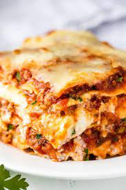

Lasagna

Description
Lasagna is a classic that every cook should have in their rotation. Tender sheets of pasta, a cheese filling, and a rich meaty tomato sauce make the perfect dish!
Ingredients
Steps
- Spread about a cup of meat sauce into a 9×13 pan. Add a layer of noodles.
- Top the noodles with some of the cheese mixture.
- Repeat the layers, ending with a layer of noodles and sauce
- Cover with foil and bake.
- Remove foil, top with mozzarella and parmesan and bake another 15 minutes.